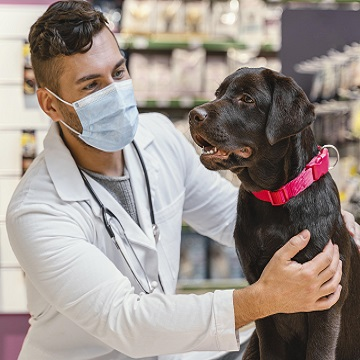

email
info@petclinic.com.br
phone
+55 81 3207-2020
Reserva
Valor da consulta R$ 69,90
done
Especialidade
Profissional
Data e Hora
Dados
Veterinários
Selecione qual Profissional irá atender seu pet

Dr. Erick Aguiar
Especialista
done
Dra. Gabriela Martins
Especialista
done
Dr. Fernando Barreto
Especialista
done
Dr. Joaquim Augusto
Especialista
done